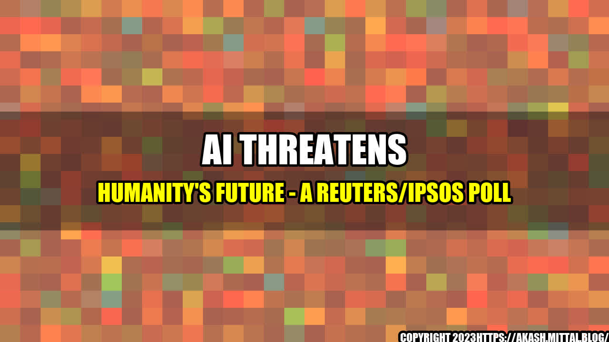

AI Threatens Humanity's Future - A Reuters/Ipsos Poll
Imagine a world where machines can think and act like humans, making decisions and performing tasks that were once solely the domain of people. This is the brave new world of Artificial Intelligence (AI), a technology that promises to transform society and improve the lives of people around the globe. But as with any new technology, there are fears and concerns about its impact on humanity.
A recent Reuters/Ipsos poll has found that 61% of Americans believe AI threatens humanity's future. The poll surveyed over 2,000 adults in the United States, asking them about their attitudes towards AI and its potential effects on society.
The Rise of AI
AI is already changing the world as we know it, with applications in fields as diverse as healthcare, finance, transportation, and entertainment. In healthcare, AI is being used to identify diseases and develop new treatments. In finance, AI is being used to analyze market data and predict trends. In transportation, AI is being used to improve safety and efficiency. And in entertainment, AI is being used to create more realistic video game characters and enhance special effects in movies.
But the rise of AI is not without its challenges. One of the biggest challenges is the question of how to ensure that AI is developed in a way that aligns with human values and ethics. There are concerns that AI could be used to automate jobs and displace workers, leaving many people without employment. There are also concerns that AI could be used to create autonomous weapons that could engage in war without human intervention.
The concerns about AI are not just hypothetical - there are already examples of how AI has been used in ways that are harmful to people. For example:
- In 2016, an AI chatbot created by Microsoft called Tay was shut down after it began spouting racist and sexist comments on Twitter.
- In 2018, an Uber self-driving car struck and killed a pedestrian in Arizona, raising questions about the safety of autonomous vehicles.
- In 2020, a study showed that facial recognition software was less accurate in identifying people of color, raising concerns about racial bias in AI.
The Three Rs: Responsibility, Regulation, and Research
So, what can be done to ensure that AI is developed in a way that benefits humanity and does not pose a threat to our future? Here are three key strategies:
- Responsibility: Developers and users of AI must take responsibility for its impact on people and society. This means incorporating ethics and human values into the development process, and ensuring that AI is designed to enhance, rather than replace, human workers.
- Regulation: Governments and regulatory bodies must establish clear guidelines and standards for the development and use of AI. This includes regulations on data privacy, safety, and security, as well as guidelines for the use of AI in sensitive areas such as healthcare and finance.
- Research: More research is needed to better understand the impact of AI on society and to develop new technologies that align with human values and ethics. This includes research on the potential effects of AI on employment, privacy, and human rights, as well as research into new applications of AI that can benefit society.
Conclusion
The rise of AI is not something to fear, but it is something to be cautious about. As with any new technology, there are both opportunities and challenges. By taking responsibility for its impact, establishing clear regulations, and investing in research, we can ensure that AI is developed in a way that aligns with human values and benefits society as a whole.
So let us embrace the potential of AI, while also keeping a watchful eye on its development, to ensure that we create a future that is bright, equitable, and sustainable.
Personal anecdotes and case studies can provide valuable insights into the impact of AI on everyday people. If you have a story to share, please do so in the comments section below.
References and Hashtags
Hashtags: #AI #artificialintelligence #future #technology #society #poll #statistics #examples
Article Category: Technology & Society
Curated by Team Akash.Mittal.Blog
Share on Twitter Share on LinkedIn